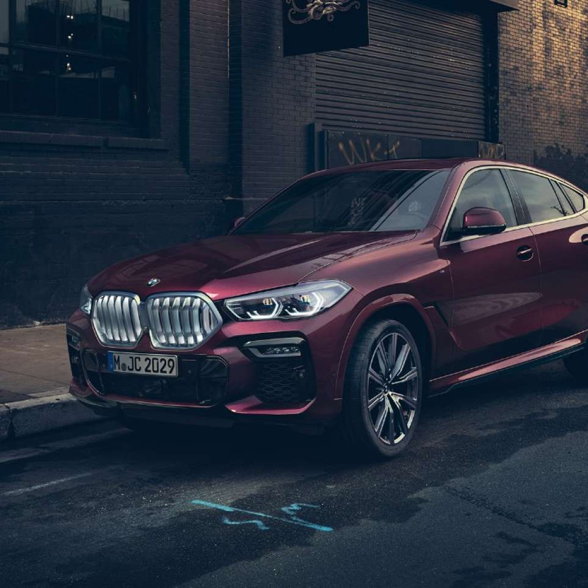

BMW X6
Uncompromisingly non-conformist – the new BMW X6 stands for provocative self-assertiveness. Above all, this is visible in the extremely athletic body of the vehicle along with the new, distinctive design language, which is displayed by the supreme exclusivity and visionary technologies such as the impressive BMW kidney grille ‘Iconic Glow’. All of this primarily points to one thing: absolute dominance, which the new BMW X6 demonstrates quite matter-of-factly on every route thanks to a powerful engine, precise suspension and features such as the xOffroad package. Experience a previously unseen new way of exceeding expectations with the new BMW X6.
BMW X6 M50i:
Fuel consumption in l/100 km (combined): 11.5
CO2 emissions in g/km (combined): 263